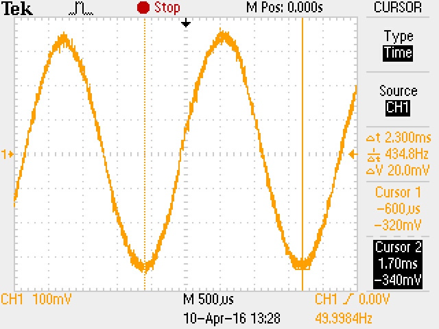
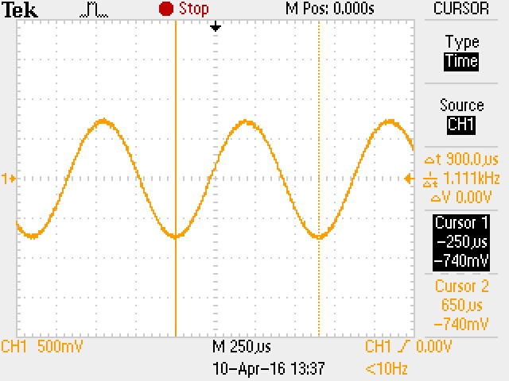
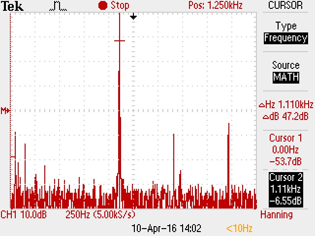
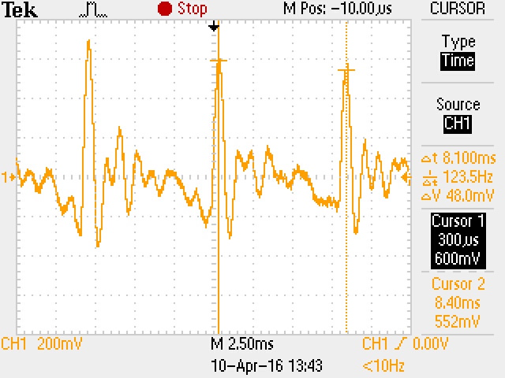
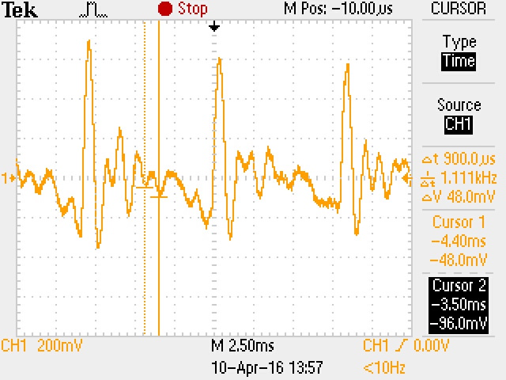
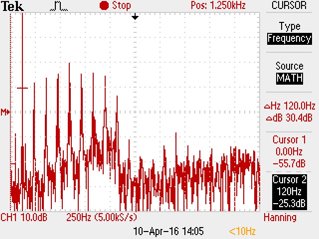
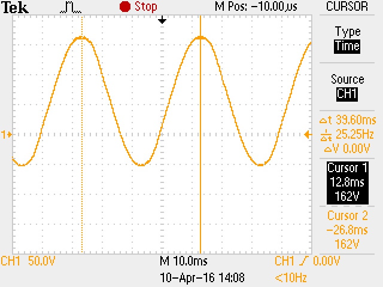
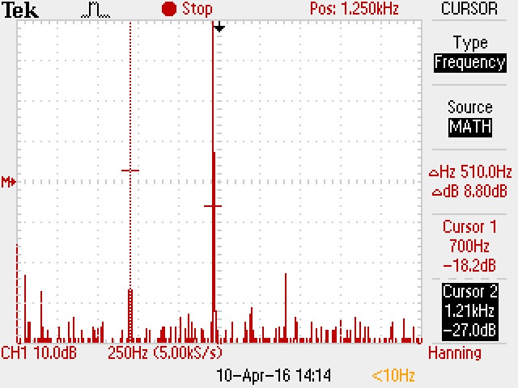
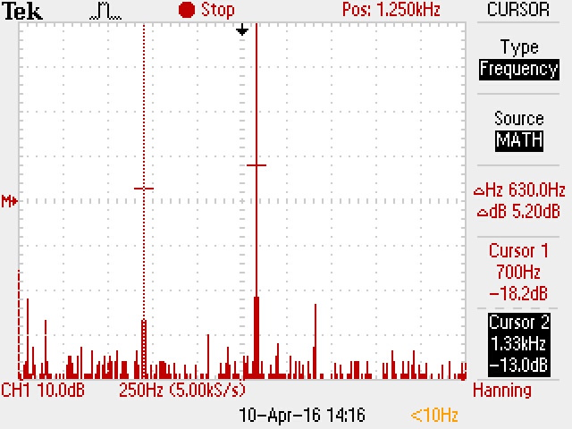

| Töö tegijate nimed: |
| Aleksei Volkov, Neeme Tingas |
| Töö tegemise kuupäev: Sun Apr 10 12:11:21 2016 |
| Terminalseadme seisund | U1 [V] | U2 [V] | U3 [V] |
| Rahuseisund | 55 | 55 | 0 |
| Hõiveseisund | 9,7 | 7,1 | 2,6 |
Valimistooni kestus: 7.
Leida vool, mis läbib terminalseadet tema mõlemates seisundites ja selgitada tulemusi.
Voolutugevus I = U/R [A] Pinge U [V] Takistus R [Ω] 1. Vooluringis ei ole voolu kui terminalseade on rahuseisundis. 2. Hõiveseisundis: I = 2,6 V / 50 Ω = 0,052 A
Arvutada telefoniaparaadi takistus ja telefoniliini takistus.
Telefonitakistus = U2 / I (hõive) [Ω] Telefonitakistus = 7,1 V / 0,052 A = 136.53 Ω Liinitakistus = [U1 (rahu) - U1 (hõive)] / I (hõive) [Ω] Liinitakistus = (55 V - 9,7 V) / 0,052 A = 871,15 Ω
| Valimistoon |  |
| Pinge amplituud | 344 |
| periood | 2.3 |
| sagedus | 434.8 |
| Vile | Signaalipilt | Spektripilt | |
| Pinge amplituud | 750 |  |  |
| Periood | 900 us | ||
| Sagedus | 1,111 kHz | ||
| Vokaal A | Signaalpilt(korge) | Signaalpilt(madal) | Spektripilt | |
| Pinge amplituud (kõige suurem) | 524 |  |  |  |
| Periood (kõige pikem) | 8.1 ms | |||
| Periood (kõige lühem) | 900 us | |||
| Sagedus (kõige madalam) | 1.111kHz | |||
| Sagedus (kõige kõrgem) | 123.5 Hz | |||
| Kutsesignaal |  |
| Pinge amplituud | 108 V |
| periood | 39.6 ms |
| sagedus | 25.25Hz |
| Toonvalimine |  |  |
| valitud number | 1 | 2 |
| jooniselt leitud esimene sagedus | 700 Hz | 700 Hz |
| jooniselt leitud teine sagedus | 1.21 kHz | 1.33 kHz |
| tehtud järeldus tabelist 1 | Mõõdetud väärtus klappib tabeliväärtusega | Mõõdetud väärtus klappib tabeliväärtusega |
KIRJUTA KOKKUVÕTE JA JÄRELDUSED SIIA!